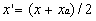

3.1 AREA SOURCE
For
an area source, such as surface contamination, landfills, and lagoons,
the initial vertical dispersion computation depends on whether the receptor
is inside or outside the area. For receptors located outside the area,
the vertical dispersion parameter is computed based on the distance of
the receptor from the center of the area source. This approach assumes
the higher concentrations from closer portions of the area will be balanced
by lower concentrations from farther portions such that a representative
average value will be obtained.
To avoid estimating spuriously high concentrations very near the center
of the area, a different approach is used for receptors within the area.
For receptors located at the edge, the distance to the center is used.
This assumption is consistent with computation outside the area. For receptors
located at the center, one-half of the distance from the edge of the area
to the center is used.(a)
The assumption is that the dilution effect of the area for a receptor at
the center can be approximated by point sources located half the distance
from the center. For intermediate locations within the area, the distance
used to compute the vertical dispersion parameter varies linearly between
the value used at the edge and center of the area as shown in Equation
45.

(46)
where
x_ = distance for definition of vertical dispersion parameter (m)
x = distance downwind from center of release (m)
xa = distance from center to edge of area along wind axis (m).
This simplified area dispersion approach assumes that the contribution
at a receptor is only from the direction sectors upwind of the receptor's
location. Conversely, these direction sectors, centered on the center of
area which divide the area into sixteen "pie shaped" areas, only influence
concentrations in their direction of influence. This assumption works best
when the winds are relatively uniform. For cases where there is a relatively
strong wind persistence in one direction, this approach tends to concentrate
the influence of that persistence in that direction. The effect will normally
be minimal and only occur at distances within, or very close to, the area.
The gross shape of area is accounted for defining
the area with an elliptical shape. The radial distances used in the computation
are allowed to vary as a function of direction and thus approximate the
influence of the area shape on the dispersion. The elliptical shape is
limited to N-S and E-W axis.